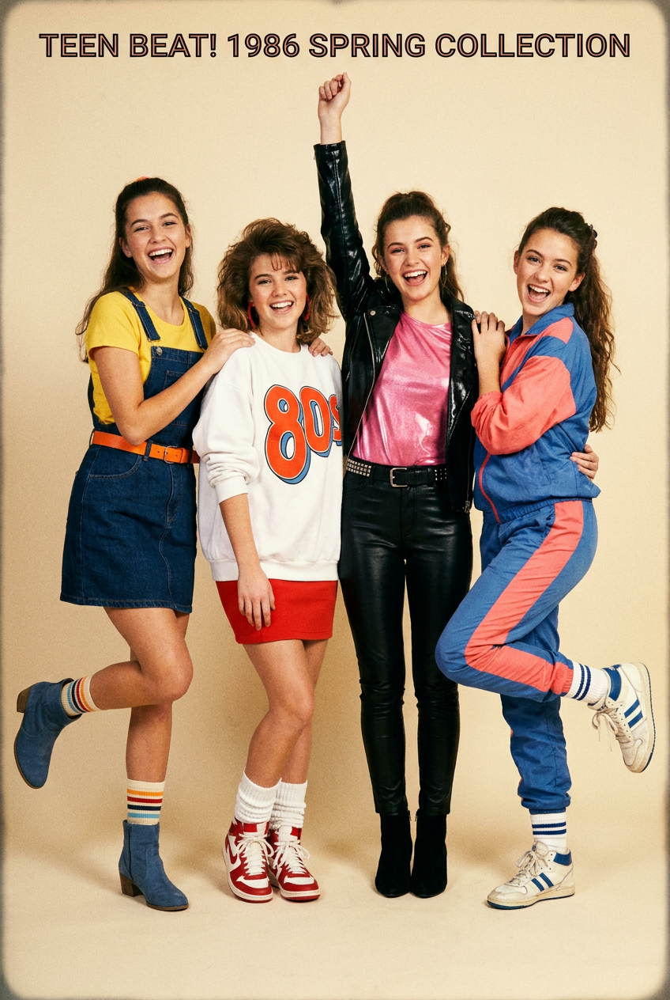
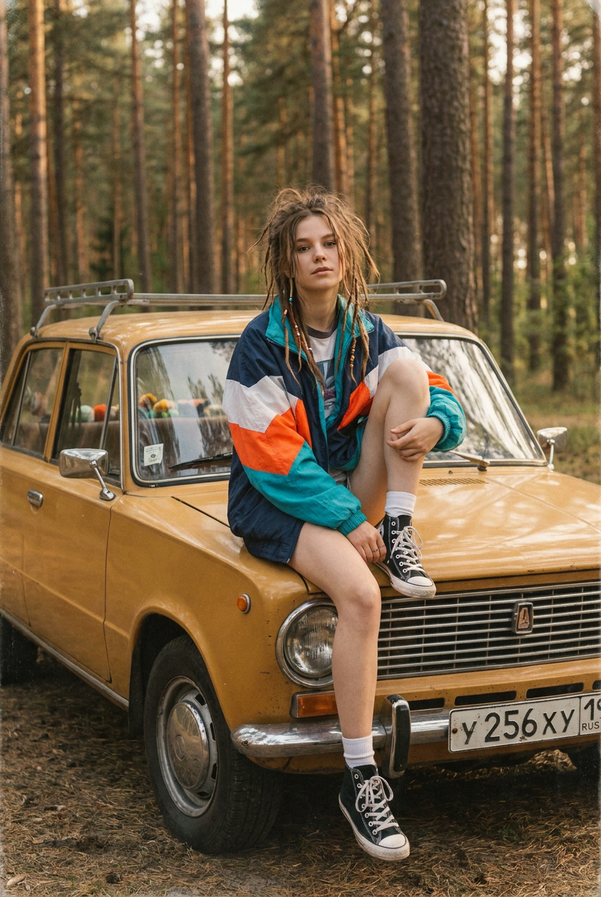
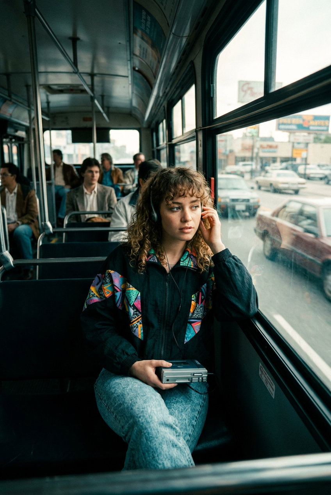
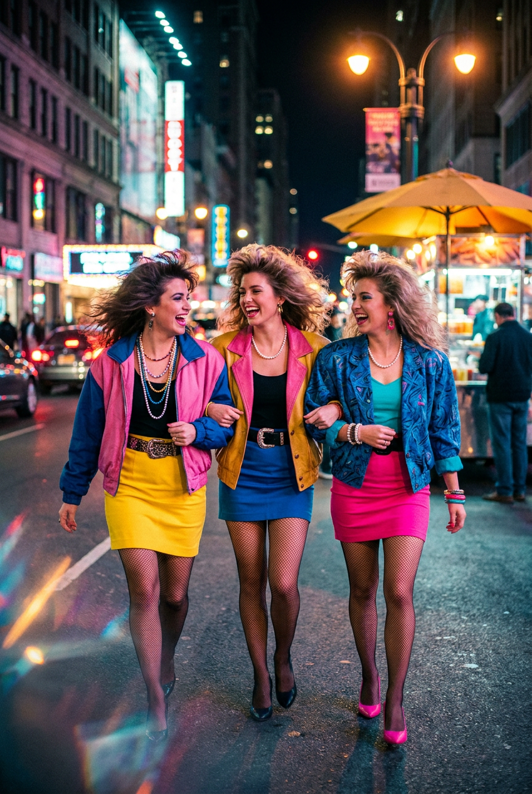
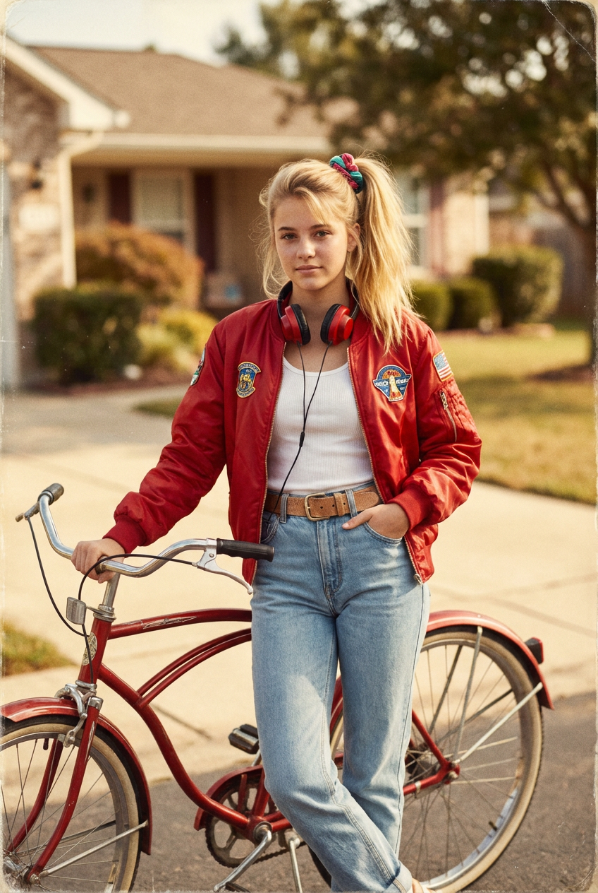
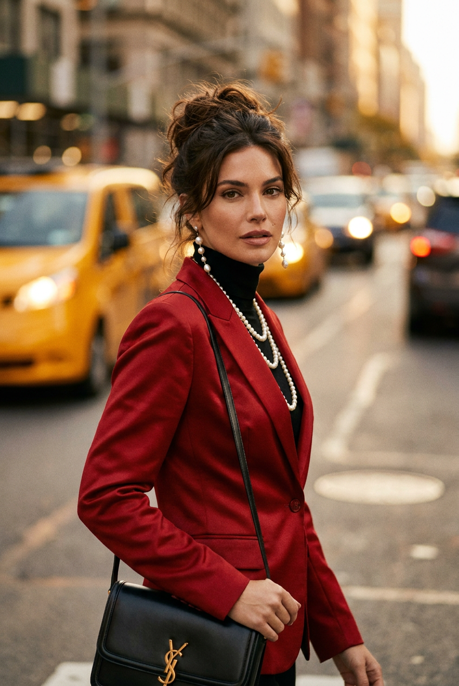
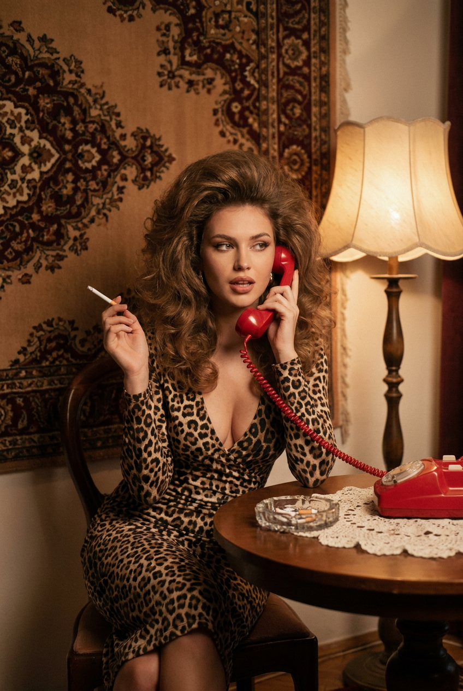
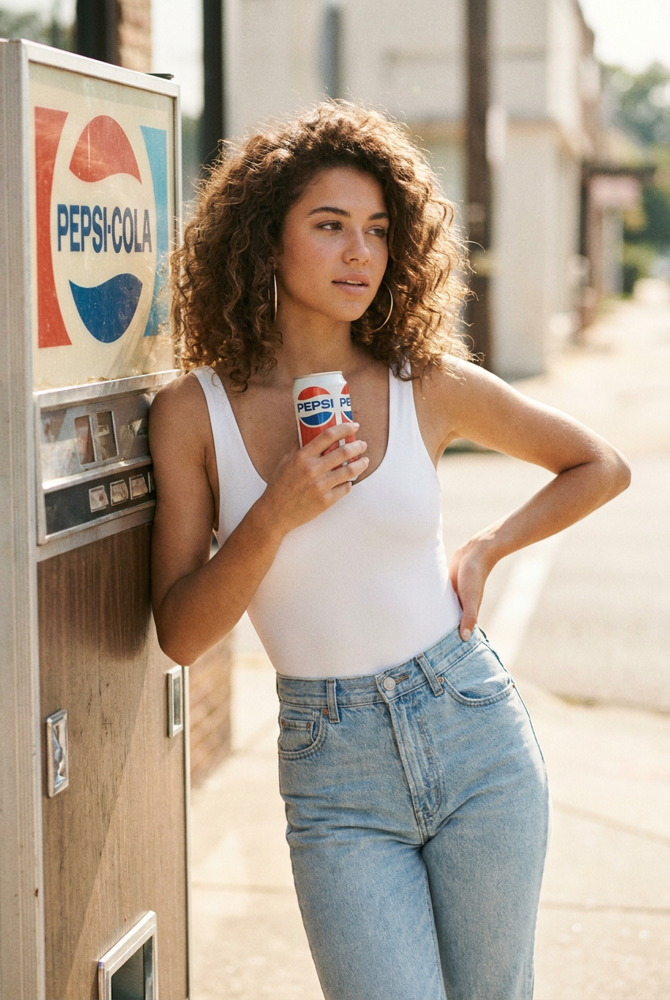
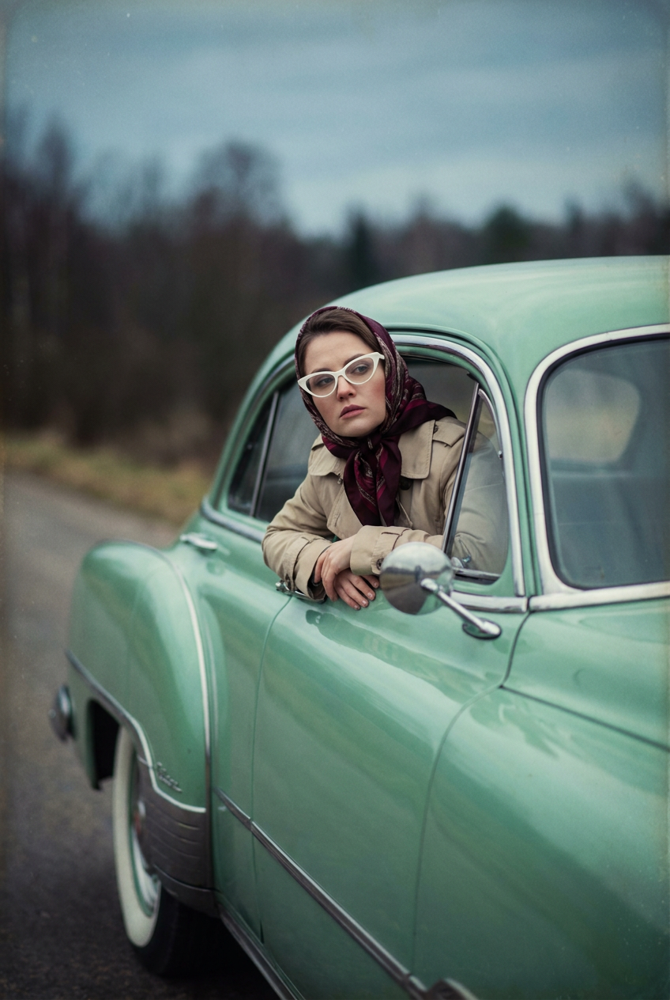
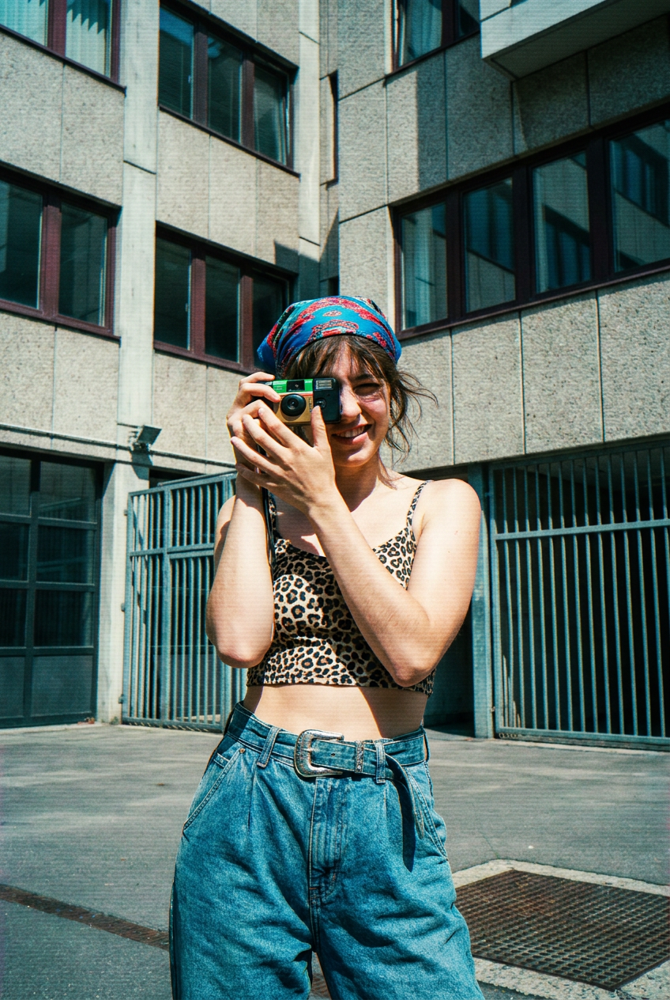

ИИ-фото в ретро-стиле: 10 промптов для нейросети

Ретро-кадр сложно собрать из одного описания: нейросеть путает эпоху, добавляет современную одежду и превращает пленочную атмосферу в случайный фильтр. Хороший промпт решает эту проблему — задает не только сюжет, но и позу, свет, фактуру пленки, одежду и детали окружения.
В подборке — 10 сценариев для ИИ-фото в духе 60–90-х: от подростковой журнальной съемки и поездки в автобусе до желтых такси, кассетного плеера, Pepsi, ретро-автомобилей и клубной моды. Каждый текст можно использовать как основу для вертикального кадра.
Как сгенерировать такое фото: пошагово
Нужен снимок анфас при ровном свете, лицо в кадре целиком, без тёмных очков и головных уборов. Разрешение от 1000 пикселей по короткой стороне. Чем чётче исходник, тем точнее модель повторит черты.
Выберите сценарий ниже и нажмите «Копировать» — текст уйдёт в буфер целиком, вместе с командой сохранения внешности. Эта команда стоит первой строкой и отвечает за то, чтобы на выходе было ваше лицо, а не случайное.
Кнопка «Сгенерировать» рядом с каждым промптом открывает модель в новой вкладке. Nano Banana Pro работает с референсом лица — в отличие от моделей, которые генерируют портрет с нуля и узнаваемость теряют.
Промпт — в поле ввода, портрет — через загрузку референса. Порядок значения не имеет, но без референса команда сохранения внешности работать не будет: модели нечего сохранять.
Для сторис и ленты берите 9:16, для превью и обложек — 4:3. Первый результат редко идеален: если поза или свет ушли не туда, поправьте соответствующую часть промпта и запустите заново. Обычно хватает двух-трёх итераций.
10 промптов для генерации
1. Подруги на журнальной съемке
Строго сохранить внешность по загруженному референсу: черты лица, пропорции, мимику и текстуру кожи без изменений. Фотореалистичная вертикальная фотография четырех молодых девушек-подростков в фотостудии на светлом нейтральном фоне, будто страница молодежного журнала или каталога одежды середины — конца 1980-х. Почти полный рост, девушки стоят очень близко, в живой слегка хаотичной позе: одна поднимает руку, остальные касаются друг друга. Все улыбаются, выглядят радостно и уверенно, в группе чувствуется движение, дружба и энергия подростковой fashion-съемки. Слева девушка слегка сгибает ногу; на ней ярко-желтая футболка, темно-синий джинсовый сарафан мини с широкими лямками и приталенным силуэтом, на талии оранжевый пояс или завязанный ремень. Остальные участницы одеты в яркую молодежную моду 80-х, с контрастными цветами и джинсовыми деталями. Мягкий студийный свет, умеренная пленочная зернистость, естественные лица, слегка выцветшая журнальная цветопередача.
2. Девушка на капоте

Строго сохранить внешность по загруженному референсу: черты лица, пропорции, мимику и текстуру кожи без изменений. Вертикальный фотореалистичный кадр, похожий на личную пленочную фотографию конца 70-х, 80-х или начала 90-х. Молодая девушка сидит на передней части винтажного советского автомобиля горчично-желтого или теплого охристого цвета, машина припаркована в сосновом лесу. Композиция центрированная, девушка показана в полный рост в сидячей позе: одна нога согнута и подтянута ближе к корпусу, вторая свободно свисает к бамперу, руки лежат на коленях. Выражение естественное, расслабленное и подростково-уверенное. На ней объемный спортивный свитер или ветровка 80-х — 90-х с color-block дизайном: темно-синий основной цвет, широкие белые, ярко-оранжевые и бирюзово-голубые вставки на плечах и груди. Oversized-силуэт, длинные рукава, уютное гранжевое настроение. Мягкий дневной свет, сосны на фоне, теплые цвета, зерно и легкая выцветшая фактура старой пленки.
3. Музыка в старом автобусе

Строго сохранить внешность по загруженному референсу: черты лица, пропорции, мимику и текстуру кожи без изменений. Вертикальная фотореалистичная street-фотография в духе late 1980s, снятая внутри старого автобуса или троллейбуса. В салоне темно, видны металлические стойки, сиденья и большие окна во всю боковую стенку; за стеклом проплывает город. Легкая смазанность и ощущение тряски передают живое движение транспорта. Справа или ближе к центру сидит у окна молодая женщина 18–25 лет. У нее объемные кудрявые волосы с легкой челкой, на голове большие старые наушники, соединенные с компактным кассетным плеером, который она держит в одной руке. Лицо повернуто к камере в три четверти, взгляд спокойный и мечтательный; вторая рука поднята к уху. На ней темная куртка с яркими геометрическими вставками и светло-синие фактурные джинсы. Натуральный свет из окна, приглушенная цветопередача, пленочное зерно, реалистичные отражения на стекле, объектив 35 мм.
4. Вечерняя прогулка подруг

Строго сохранить внешность по загруженному референсу: черты лица, пропорции, мимику и текстуру кожи без изменений. Вертикальная фотореалистичная street-фотография конца 80-х — начала 90-х: три молодые женщины примерно 20–30 лет идут по центру городской улицы, одновременно шагают, смеются и разговаривают. Кадр от пояса до почти полного роста, камера на уровне глаз чуть ниже, перспектива уличного объектива 35–50 мм. У всех объемные волосы в стиле big hair, пряди развеваются при ходьбе, лица повернуты друг к другу, улыбки широкие и дружеские. Слева девушка в розовом жакете с длинными синими рукавами и воротником, ярко-желтой юбке, черном топе, широком ремне, нескольких жемчужных или бисерных ожерельях и крупной сетке; на ногах туфли на каблуке или ботильоны. Средняя девушка в желтом или золотистом жакете. Третья участница в контрастном ярком образе 90-х. Вечерний городской свет, легкое размытие движения, живой репортажный характер, мягкое пленочное зерно.
5. Велосипед и красный бомбер

Строго сохранить внешность по загруженному референсу: черты лица, пропорции, мимику и текстуру кожи без изменений. Фотореалистичный вертикальный снимок в духе любительской фотографии начала — середины 1980-х. Молодая девушка-подросток или юная женщина стоит во дворе пригородного дома рядом с красным винтажным велосипедом. Одной рукой она держит руль, другая небрежно расположена у кармана джинсов. На ней ярко-красный блестящий бомбер 80-х с нашивками и декоративными эмблемами на груди, под ним белый облегающий рубчатый топ. На шее крупные красные накладные наушники. Светло-голубые джинсы с высокой талией плотно сидят по фигуре, образ дополнен широким темным ремнем с металлической пряжкой, несколькими браслетами и напульсниками. Волосы собраны в высокий боковой хвост с объемом у корней, закреплены яркой резинкой или scrunchie. Дневной рассеянный свет, тихий жилой двор, естественная поза, теплые выцветшие цвета, заметное, но умеренное зерно пленки.
6. Красный жакет и желтые такси

Строго сохранить внешность по загруженному референсу: черты лица, пропорции, мимику и текстуру кожи без изменений. Уличный fashion-editorial, фотореалистичный кадр по пояс: элегантная женщина стоит в оживленном мегаполисе на фоне желтых нью-йоркских такси. Теплый золотистый солнечный свет, мягкое боке, видны городской трафик, асфальт и дорожная разметка, настроение Manhattan street photography. На женщине насыщенно-красный структурный жакет с легким блеском и черная водолазка, на шее несколько жемчужных ожерелий разной длины. На плече черная кожаная сумка люксового вида с небольшой золотой металлической эмблемой. Волосы собраны в небрежный объемный пучок, отдельные пряди выбились; в ушах длинные серьги с жемчугом. Образ соединяет old money, quiet luxury и Parisian chic. Размытый фон, мягкий солнечный контраст, легкая винтажная цветокоррекция, естественная кожа, объектив 85 мм, малая глубина резкости, теплый пленочный оттенок.
7. Красный телефон и леопард

Строго сохранить внешность по загруженному референсу: черты лица, пропорции, мимику и текстуру кожи без изменений. Кинематографичная фотореалистичная сцена в эстетике 70-х — 80-х. Молодая женщина сидит за небольшим круглым деревянным столом в теплой винтажной комнате, говорит по ярко-красному проводному телефону и держит в другой руке тонкую сигарету. У нее пышные объемные волосы, формирующие выразительный силуэт ретро-гламура. На женщине облегающее платье с глубоким V-образным вырезом и леопардовым принтом, образ уверенный и чувственный, как кадр европейского фильма или fashion-съемки конца 70-х. На стене висит большой декоративный ковер с восточным орнаментом, слева стоит старинная лампа с тканевым абажуром и мягким теплым светом. На столе лежат кружевная салфетка и стеклянная пепельница с окурками, рядом стоит красный телефонный аппарат. Камерная композиция, приглушенные коричнево-золотистые оттенки, мягкий контраст, пленочное зерно, объектив 50 мм.
8. Pepsi и мода 80-х

Строго сохранить внешность по загруженному референсу: черты лица, пропорции, мимику и текстуру кожи без изменений. Вертикальный среднеплановый фотореалистичный кадр в стиле старой рекламной фотографии 1980-х. Молодая женщина небрежно прислоняется к винтажному автомату Pepsi, который крупно занимает левую часть композиции. В одной руке она держит банку Pepsi на уровне груди, вторая уверенно лежит на бедре; взгляд направлен в сторону, не в объектив. На ней белое облегающее боди без рукавов и светло-голубые джинсы с высокой посадкой. Волосы объемные, слегка растрепанные, с характерной пышностью 80-х, в ушах крупные серьги-кольца. Поза расслабленная, уверенная и немного сексуальная. Летняя уличная атмосфера, теплый солнечный свет, мягкий фокус, легкая дымка, умеренное зерно, слегка выцветшие цвета и естественный блеск кожи. Автомат хорошо читается, фон размыт. Эстетика винтажной журнальной рекламы, мягкий контраст, теплый faded-профиль.
9. Мятный автомобиль шестидесятых

Строго сохранить внешность по загруженному референсу: черты лица, пропорции, мимику и текстуру кожи без изменений. Винтажная уличная фотография, выглядящая как подлинный пленочный кадр середины XX века. В кадре доминирует большой классический американский автомобиль 1960-х годов мягкого мятно-бирюзового цвета: округлый кузов, хромированное боковое зеркало, белые шины и характерные линии эпохи. Съемка сбоку, акцент на передней и средней части машины. Женщина сидит внутри и опирается руками на открытое окно двери, слегка высунувшись наружу. На ней светлый бежевый плащ или длинное пальто, на голове платок с красно-бордовым и темным узором, завязанный в стиле 60-х, на глазах крупные светлые или белые очки ретро-формы. Поза спокойная, задумчивая, расслабленная, будто остановка во время дальней дороги. Пустая асфальтированная дорога или парковка, мягкий дневной свет, немного выцветшая палитра, пыль и зерно старой пленки, горизонтальный характер внутри вертикального кадра.
10. Камера и клубный образ

Строго сохранить внешность по загруженному референсу: черты лица, пропорции, мимику и текстуру кожи без изменений. Фотореалистичная вертикальная street-фотография в эстетике 1980–1990-х, почти полный рост. Молодая женщина 20–30 лет стоит в индустриальном городском дворе или проходе возле большого здания. Корпус слегка наклонен, одна рука поднята к лицу: она делает вид, что снимает на компактную пленочную камеру или небольшую видеокамеру без логотипов, объектив направлен в сторону. Вторая рука расслаблена у талии. Камера частично закрывает лицо, но заметны улыбка и игривый флирт, глаза остаются в тени. Волосы слегка растрепаны, на голове яркая бандана с сине-красным графическим рисунком. На женщине открытый леопардовый топ-бра, мешковатые джинсы с высокой посадкой и ремень с крупной пряжкой; джинсовая фактура хорошо читается. Контрастная клубная мода 90-х, насыщенные цвета, жесткий боковой свет, бетон и металлические детали фона, объектив 35 мм, легкое пленочное зерно.
Что важно учесть в этом стиле
Ретро — это не просто слово «винтажный». Укажите конкретный период, тип пленки и характер изображения: любительский снимок, журнальная съемка, рекламный кадр или уличный репортаж. Для 60-х подойдут пастельные цвета, хром и мягкий солнечный свет, а для 80-х — контрастный color-block, объемные волосы, вспышка и заметное зерно.
Одежда и предметы должны соответствовать эпохе. Кассетный плеер, проводной телефон, автомат с газировкой, советская машина или крупные серьги работают лучше, чем абстрактное описание «ретро». Для естественной фотографии задавайте объектив: 35 мм для улицы, 50 мм для бытовой сцены, 85 мм для портрета с боке.
Идеи для вариаций
- Замените фотостудию на школьный актовый зал, универмаг или танцплощадку.
- Перенесите сцену с автобусом в ночной поезд или пустой трамвай после дождя.
- Добавьте вспышку в лоб, следы засветки и дату в углу кадра для эффекта семейного архива.
- Сделайте палитру Kodachrome: теплые красные, глубокий синий и слегка желтоватые светлые участки.
- Попросите нейросеть показать один сюжет в трех эпохах: 1960-е, 1980-е и начало 1990-х.
Как собрать свой промпт
Начните с формата и жанра: «вертикальная фотография 4:5, уличный снимок на объектив 35 мм». Затем опишите героя, позу, одежду и главный предмет в кадре. После этого добавьте локацию, время суток, направление света и фон. Такой порядок помогает модели не потерять сюжет среди декоративных деталей.
В финале зафиксируйте обработку: тип пленки, степень зерна, контраст, насыщенность и глубину резкости. Если нужен реалистичный результат, отдельно укажите естественную кожу, правильные руки, одну камеру в кадре и отсутствие современных логотипов. Для удачного варианта заложите 4–8 генераций, меняя по одному параметру за попытку.
Ошибки, из-за которых кадр не получается
- Слишком широкая эпоха. Формулировка «ретро XX века» смешивает моду 60-х, 80-х и 90-х. Указывайте десятилетие.
- Нет описания позы. Без положения рук и ног персонаж часто выглядит неестественно или теряет главный предмет.
- Предметы перечислены без приоритета. Назначьте автомобилю, телефону или автомату Pepsi конкретное место в композиции.
- Пленочный эффект заменяет свет. Одного слова «зерно» мало: задайте источник света, мягкость, контраст и фокусное расстояние.
- Слишком много мелких деталей. Если промпт перегружен аксессуарами, модель может изменить одежду. Сначала закрепите силуэт и цвета, затем добавляйте декор.
Частые вопросы
Как сделать такое ИИ-фото бесплатно?
Попробуйте Kandinsky или Шедеврум: у них есть бесплатная генерация, но лимиты, очереди и качество могут меняться. Krea AI и Arena.ai позволяют тестировать разные модели, однако бесплатный режим обычно ограничивает число попыток, разрешение или скорость. Референс можно загрузить не везде: сервис может поддерживать только текст, уменьшать исходник или заметно менять лицо и позу. Для бесплатного старта подготовьте вертикальный промпт, сделайте 4–8 вариантов и повышайте разрешение только у удачного кадра.
Как добиться настоящей пленочной фактуры?
Опишите не только зерно, но и источник изображения: любительская фотография, журнальный снимок или кадр на 35-мм пленку. Добавьте легкую засветку, мягкий контраст, выцветшие цвета и естественные несовершенства. Слишком сильное зерно часто превращает изображение в грязную текстуру.
Какой формат выбрать для ретро-фото?
Для подборок и соцсетей подойдет вертикальный формат 4:5 или 2:3. Если в сцене важны автомобиль, улица или интерьер, оставьте больше воздуха по краям. В промпте заранее укажите «вертикальная композиция» и положение главного объекта.
Что делать, если нейросеть путает одежду и аксессуары?
Разделите описание на блоки: персонаж, поза, одежда, предметы, фон и свет. Сначала закрепите ключевой силуэт и два-три главных цвета, а затем добавляйте украшения. Если есть референс, используйте его как ориентир композиции, но отдельно уточните, какие детали нужно сохранить.